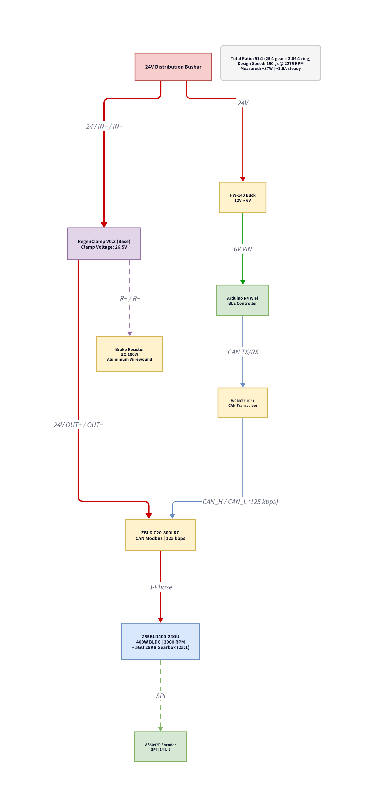

5.2.2 Rotation — Electrical & Control
Requirements Cascade
The rotation electrical subsystem responds to the following system-level requirements defined in the Robot Mechanism section:
| System Req | Subsystem Implication |
|---|---|
| RM-4 | Yaw angular velocity ≥ 150°/s — motor and drive ratio must deliver sufficient speed under load |
| RM-1 | Hold commanded angle under punch impact — closed-loop position control with disturbance rejection |
Motor Specification
The base rotation uses a Z55BLD400-24GU 400 W BLDC motor with a 26:1 integrated gearbox and a 3.5:1 (70:20 tooth) belt stage, yielding a 91:1 total drive ratio, controlled via the ZBLD C20-800LRC CAN motor driver. The motor provides high torque at low speed, making it well-suited for the timing-belt-driven yaw stage, which requires smooth re-angling under the inertia of the full upper structure.
| Parameter | Value |
|---|---|
| Motor model | Z55BLD400-24GU (400 W BLDC) |
| Gearbox | 26:1 integrated gearbox + 3.5:1 (70:20) belt stage = 91:1 total |
| Driver | ZBLD C20-800LRC (CAN interface) |
| Nominal voltage | 24 V |
| Peak current draw | ~16 A (stall) |
| Position feedback | AS5047P 14-bit magnetic encoder (SPI) |
Control Architecture
The base rotation controller is an Arduino Uno R4 WiFi, operating as a separate controller from the Teensy 4.0 that manages the arm motors. Communication with the Jetson host uses WiFi UDP, eliminating physical cable routing through the rotating base joint. The CAN bus for the base motor operates at 125 kbps (versus 1 Mbps for the arm motors), necessitating a separate bus.
Command Protocol
| Command | Format | Effect |
|---|---|---|
| Step left | L:deg |
Decrements target angle by deg degrees |
| Step right | R:deg |
Increments target angle by deg degrees |
| Go to absolute | GO:deg |
Sets target to deg degrees (absolute) |
| Set peak RPM | PEAK:rpm |
Sets the maximum motor speed cap |
Validated Test Results
The base rotation controller was validated through seven controlled manoeuvres, confirming stable settling and correct limit enforcement:
| Test | Result |
|---|---|
| L:15 × 7 steps (0° to −90°) | Each step settled at target ±1°; steady current 0.24–0.26A |
| Limit at −90.2° | Motor stopped; limit held; no further motion toward boundary |
| Recovery from −90° (R:15) | Motor returned to −75°; return-direction always permitted |
| GO:0 from −75° | Smooth return to 0° in approximately 2.5s |
| R:15 × 8 steps (0° to +89.5°) | Each step settled correctly at commanded target |
| GO:0 from +60° | Smooth return; peak current 0.6A during fast traverse |
| Limit enforcement at +90° | Rightward motion blocked; leftward return permitted |
Design Rationale
The Z55BLD400 driver operates at 125 kbps, whereas the Damiao arm motors use 1 Mbps; separate buses eliminate firmware complexity for dual-baud switching. A wireless WiFi UDP link was chosen to eliminate cable fatigue: a physical cable routed through the rotating base joint would experience continuous twist and flex, eventually failing. Base rotation is additionally decoupled from arm control as an independent failure domain, such that either subsystem can be power-cycled without disturbing the other.
Power Integration
The Z55BLD400 motor is connected to the 24V motor bus via the distribution busbar, alongside the arm motors and height motor. The Arduino controller is powered from the isolated 12V logic rail through a HW-140 buck converter module (LM2596-based, 12V → 6V) (≥1 A), ensuring motor bus OVP events do not reset the base rotation controller.
| Component | Rail | Current | Notes |
|---|---|---|---|
| Arduino R4 WiFi | 6V VIN (from HW-140 buck converter) | ~300 mA | WiFi active + logic |
| WCMCU-1051 CAN transceiver | 5V | ~50 mA | From Arduino 5V rail |
| AS5047P encoder | 3.3V | ~15 mA | From Arduino 3.3V regulator |
| Total from PSU | 12V via HW-140 (6V VIN) | ~400 mA | 2 W nominal |

Verification Targets
The following tests are planned for the rotation electrical subsystem, mapping to the right side of the V-Model:
| Test | Criterion | Target | Status |
|---|---|---|---|
| Angular velocity | Yaw speed under no-load | ≥ 150°/s | Pending |
| Position hold | Angle deviation under 50 N lateral punch | ≤ 5° overshoot, return within 500 ms | Pending |
| Communication | Command frame loss rate | < 1% over 1000 frames | Pending |